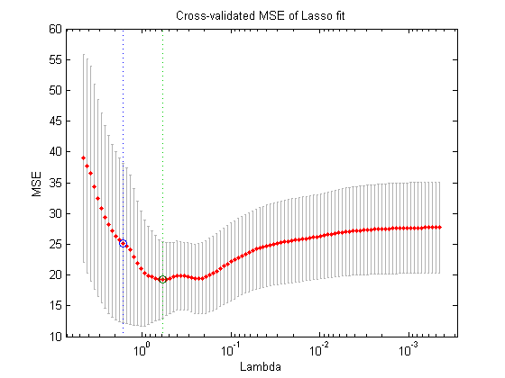

Chapter 5 Cross Validation
5.1 Motivation and Core Idea
Cross-validation is a tool for estimating the performance of an algorithm on new data points, the so-called the generalization error. An estimate of the generalization allows us to do two important things:
- Tuning the parameters of a statistical technique.
- Comparing statistical techniques with regard to their accuracy.
If we use the training data to evaluate the performance of an algorithm, this estimate will be over-optimistic because an estimator is usually obtained by minimizing some sort of error in the training data. Therefore, we use a separate data pool, called the test data to evaluate the performance out of sample. Consider the regression function estimate \(\hat{m}\) based on a sample \((X_1, ..., X_n.)\). By increasing the number of parameters in the model and by allowing for interactions between them, we can make the regression model fitting arbitrarily well to the data. However, such an extremely complex model will not perform as well with new data, that is, will not generalize well to other data sets, since we essentially modeled also a lot of noise. To estimate the performance of an algorithm on a new sample, we introduce the following notation: \[ l^{-1}\sum\limits_{i = 1}^l\rho(Y_{new, i}, \hat{g}(X_{new, l}))\] Where \(\rho\) is a loss function to be evaluated on the new data points \((Y_{new, 1}, ..., Y_{new, l})\) and the prediction made for \((X_{new, 1}, ..., X_{new, l})\) with the function \(\hat{g}\), which was estimated from the training data \((X_1, ..., X_n)\). When \(l\) gets large, this approximates the test error \[\mathbb{E}_{(X_{new}, Y_{new})}[\rho(Y_{new}, \hat{m}(X_{new})]\] which is still a function of the training data (since it is conditional on the training data). Note that the test error is not the same as the generalization error. The latter is an expectation over both the training and the test data. The typical relationship between the test error and the training error is depicted in the figure below.

The optimal model complexity is at around \(20\) degrees of freedom. With more degrees of freedom, the test set error increases again. We start to model noise. This is also called overfitting.
5.2 Loss Function
Depending on the application, one can imagine different loss-functions. For example the squared deviance from the true value is often used, i.e. \[n^{-1}\sum\limits_{i = 1}^n\rho(Y_i, \hat{m}(X_i)) = n^{-1}\sum\limits_{i = 1}^n(Y_i - \hat{m}(X_i))^2\] Hence, larger deviance is penalized over-proportionally. For classification, one often uses the zero-one error, i.e. \[n^{-1}\sum\limits_{i = 1}^n1_{\hat{m}(X_i) = Y_i}\] However, it might also be appropriate to use asymmetric loss functions if false negatives are worse than false positives (i.e. for cancer tests).
5.3 Implementation
There are different ways to do cross validation while adhering to the principles introduced above.
5.3.1 Leave-one-out
- Use all but one data point to construct a model and predict on the remaining data point.
- Do that \(n\) times until all \(n\) points were used for prediction once.
- Compute the test error as an average over all n errors measured, i.e
\[n^{-1}\sum\limits_{i = 1}^n \rho{(Y_{i}, \hat{m}_{n-1}^{-i}(X_i)})\] And use that as an approximation of the generalization error.
5.4 K-fold Cross-Validation
This method is best explained with a picture.
knitr::include_graphics("figures/k_fold_cv.png") Here, one splits the data set into k equally sized folds. Then, the idea is to use all \(k-1\) folds to build a model and the remaining fold to evaluate the model. Then, we average the \(k\) estimates of the generalization error. Or in mathematical notation:
Here, one splits the data set into k equally sized folds. Then, the idea is to use all \(k-1\) folds to build a model and the remaining fold to evaluate the model. Then, we average the \(k\) estimates of the generalization error. Or in mathematical notation:
\[K^{-1} \sum\limits_{k = 1}^K |B_k|^{-1} \sum\limits_{i \in B_k}\rho({Y_{i}, \hat{m}^{-B_k}_{n-|B_k|}(X_i))}\]
Note that leave-one out cv is the same as k-fold cross validation with \(=n\).
5.4.1 Random Division into test and training data set
The problem of K-fold cross-validation is that it depends on one realization of the split into k folds. Instead, we can generalize leave-one-out to leave-d-out. That means, we remove \(d\) observations from our initial data, apply our estimation procedure and evaluate on the \(d\) observations. \[\hat{\theta}^{-C_k}_{n-k} \;\;\; \text{for all possible subsets}\;\; C_k, \;\; k=1, ..., {\binom{n}{d}}\] The generalization error can be estimated with \[{\binom{n}{d}}^{-1}\sum\limits_{k = 1}^{\binom{n}{d}} d^{-1}\sum\limits_{i \in C_k} \rho(Y_i, \hat{m}^{-C_k}_{n-d}(X_i))\] For \(d > 3\), the computational burden becomes immense. For that reason, instead of considering all \({\binom{n}{d}}\) sets, we can uniformly draw \(B\) sets (\(C_1^*, ... C_B^*\)) from \(C_1, ..., C_{\binom{n}{d}}\) without replacement. For \(B=\binom{n}{d}\), we obviously get the full leave-d-out solution. The computational cost for computing such an approximation to the leave-d-out is linear in \(B\) (since evaluating is almost for free). For leave-one-out, the cost is linear in \(n\) in the same way. Hence, the stochastic approximation for leave-d-out can be even smaller than for leave-one-out if \(B < n\).
5.5 Properties of the different schemes
- leave-one-out is an asymptotically unbiased estimator for the generalization error and the true prediction. However, we use a sample size \(n-1\) instead of \(n\), which causes a slight bias (meaning we have less data as we do in a real world scenario, which most likely makes the CV score a tiny little bit worse than it should be). Because the training sets are very similar to each other the leave-one-out scheme has a large variance.
- leave-d-out has a higher bias than leave-one-out because the sample size is even smaller than \(n-1\) (for \(d>1\)). However, since we aggregate over more (\(\binom{n}{d}\) instead of \(n\)) cv scores, which can be shown to decrease the variance of the final cv estimator.
- k-fold cv has a higher bias than both leave one out.
5.6 Shortcuts for (some) linear fitting operators
Leave-one-out cv score for some linear fitting procedures such as least squares or smoothing spline can be computed via a shortcut when our loss function is \(\rho(y, \hat{y}) = |y-\hat{y}|^2\). In particular, we can compute the estimator for such a linear fitting procedure once, compute the linear fitting operator \(S\), which satisfies \(\mathbf{Y} = \mathbf{SY}\) and plug it in this formula: \[n^{-1}\sum\limits_{i = 1}^n \Bigg(\frac{Y_i - \hat{m}(X_i)}{1-S_{ii}}\Bigg)^2\] Computing \(\mathbf{S}\) requires \(O(n)\) operations (see exercises).
Historically, it has been computationally easier to compute the trace of \(\mathbf{S}\) so there is also a quantity called generalized cross validation (which is a misleading terminology), which coincides with the formula above in certain cases.
5.7 Examples
5.7.1 Practical CV in R
Key concepts to do CV are
- Do not split the data, split the indices of the data and work with them if ever possible and subset the data.
sample()is your friend. - use
purrr::map()and friends to “loop” over data. - Always work with lists, never work with data frames of indices. The reason is that data frames have structural constrains (all columns must have same number of elements) that are not natural in some situations. For example, out-of-bootstrap cv does have the same number of observations in the training set, but not in the test set.
- In conjunction with
sample(), you can usepurrr::rerunorreplicateto create lists of indices. - use helper function to solve “the small problems in the big problem”.
Let’s first declare our functions.
library("purrr")
data(ozone, package = "gss")
#' Estimate the generalization error of a ridge regression
#' @param test Test indices.
#' @param train Train indices.
#' @param .data The data.
#' @param lamda The lamda parameter for the ridge regression.
ge_ridge <- function(test, train, .data, lambda) {
fit <- MASS::lm.ridge(upo3~.,
lambda = lambda,
data = .data[train,])
pred <- as.matrix(cbind(1, .data[test, -1])) %*% coef(fit)
mean((pred - .data[test,]$upo3)^2)
}
## ............................................................................
## functions to return list with indices ####
get_boostrap_mat <- function(B, n) {
rerun(B, sample(n, n, replace = TRUE))
}
get_all_mat <- function(B, n) {
rerun(B, 1:n)
}
get_complement <- function(mat, n){
map(mat, ~setdiff(1:n, .x))
}
get_k_fold <- function(k, n) {
step <- trunc(n/k)
current <- list()
for (i in (0:(k-1) * step + 1)) {
current <- append(current, list(
(i:(i+step-1))
)
)
}
current
}Now, let us apply the functions for three cv schemes to estimate the generalization error.
## ............................................................................
## boostrap ####
# use boostrap sample to train, use all to test
n <- nrow(ozone)
train <- get_boostrap_mat(10, n)
test <- get_all_mat(10, n)
bs <- map2_dbl(test, train, ge_ridge, .data = ozone, lambda = 5)
## ............................................................................
## 10-fold ####
test <- get_k_fold(10, n)
train <- map(test, ~setdiff(1:n, .x))
kfold <- map2_dbl(test, train, ge_ridge, .data = ozone, lambda = 5)
## ............................................................................
## out-of-boostrap ####
train <- get_boostrap_mat(10, n)
test <- map(test, ~setdiff(1:n, .x))
oob <- map2_dbl(test, train, ge_ridge, .data = ozone, lambda = 5)The results are as follows:
out <- cbind(bs, kfold, oob) %>%
as_data_frame() %>%
gather(key, value)
ggplot(out, aes(y = value, x = key)) +
geom_boxplot()
5.7.2 Parameter Tuning
We want to use the scheme k-fold cross validation for parameter tuning with a lasso. We first calculate the test set error for one value of lamda (as we did above). Then, change the value of lamda and recompute the model and then test set error, so that the test set error becomes a function of lamda, as depicted below.

Then pick an optimal lamda, e.g. the one with the lowest test error (a bit arbitrary) or one according to some other rule (e.g. pick the least complex model that is within one standard error of the best model).
#' Given lambda, compute the test set error with k folds
find_lambda_kfold_one <- function(lambda, k, n, .data, ...) {
x_test <- get_k_fold(k, n)
x_train <- get_complement(x_test, n)
map2_dbl(x_test, x_train, ge_ridge, lambda = lambda, .data = .data, ...) %>%
mean()
}
#' Given a sequence of lambdas, return the corresponding test set errors
find_lambda_kfold <- function(seq, k, .data) {
cv <- map_dbl(seq, find_lambda_kfold_one,
k = k, n = nrow(.data), .data = .data)
results <- data_frame(lambda = seq, cv_score = cv)
results
}We are almost done. Let us now compute the test set error that we use as an approximation of the generalization error and plot it against different values of lamda.
find_lambda_kfold(seq = seq(5, 30, by = 3), 100, ozone) %>%
ggplot(aes(x = lambda, y = cv_score)) +
geom_line()
That looks reasonable. We could improve on that by also showing the distribution of the test set error at various lambadas. This could by done by altering find_lambda_kfold_one() to not return the mean, but also the upper and lower 95% confidence interval.